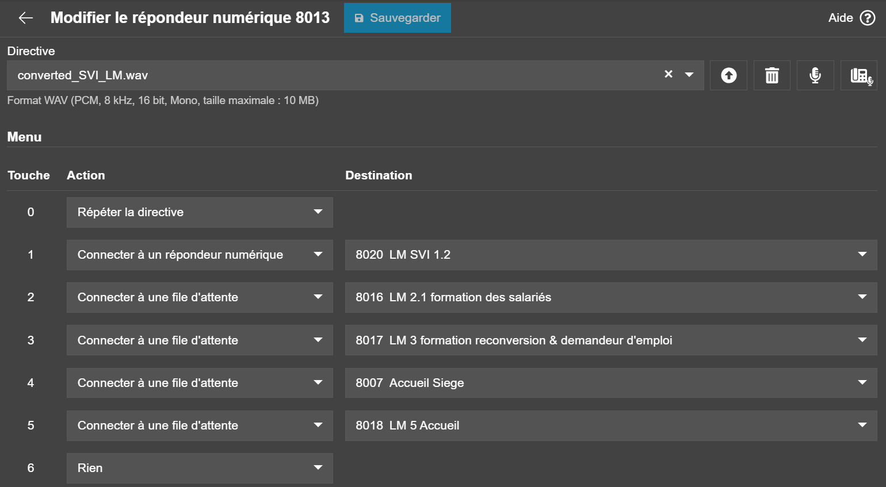
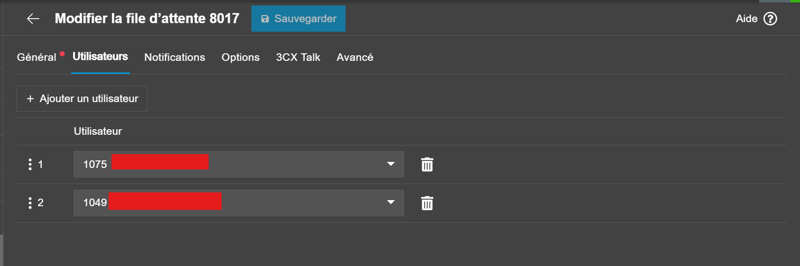
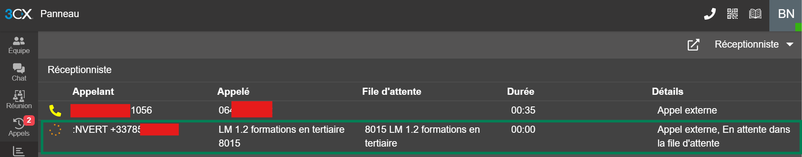

Création d'un SVI avec 3CX
Déploiement d'un Système Vocal Interactif sous 3CX pour centraliser l'accueil téléphonique et orienter automatiquement les appelants vers le bon service.
Compétences SISR mobilisées
Contexte et objectif du projet
Contexte : L'entreprise souhaite professionnaliser l'accueil téléphonique en évitant que les appels arrivent directement sur les postes des collaborateurs.
Objectif : Mettre en place un Système Vocal Interactif (SVI) sous 3CX qui oriente automatiquement les appelants vers le bon service, tout en contrôlant les temps d'attente.
- Centraliser l'entrée des appels sur un numéro unique.
- Donner un parcours clair à l'appelant (menu vocal simple et compréhensible).
- Réduire les erreurs de transfert et les temps d'attente inutiles.
- Poser les bases pour un suivi des performances (temps d'attente, appels décrochés).
Réunion avec la direction et les pôles
But de l'étape : cadrer le besoin métier avant toute configuration technique et définir précisément le déroulé du SVI.
- Cartographier les différents services joignables par téléphone (siège, agences, services support).
- Définir l'ordre d'appel des sites dans le SVI (qui sonne en premier, puis en second, etc.).
- Choisir le comportement en cas de non-réponse : bascule en boucle sur les autres sites ou message vocal.
- Fixer les durées de sonnerie et les délais avant passage au message / à la file d'attente.
- Valider le ton, le vocabulaire et les messages d'accueil avec les différentes parties prenantes du siège.
Enregistrement des messages vocaux
But de l'étape : obtenir des messages clairs, cohérents et de bonne qualité sonore.
- Rédaction des scripts des messages (accueil, attente, fermeture, erreur de saisie).
- Sélection d'une personne volontaire avec une diction claire pour les enregistrements.
- Enregistrement des messages dans un environnement calme.
- Conversion des fichiers audio (m4a → wav) au format accepté par 3CX.

Enregistrement des messages vocaux pour le SVI.
Configuration des files d'attente dans 3CX
But de l'étape : traduire le besoin métier en paramètres concrets dans 3CX.
- Création des files d'attente par service (Commercial, Technique, Administratif).
- Configuration des seuils de délai d'attente (temps maximum avant action).
- Paramétrage des renvois automatiques (vers une autre file, messagerie, ou renvoi d'appel).
- Ajout des annonces de position dans la file pour informer l'appelant.

Écran de configuration des files d'attente dans 3CX (services et paramètres associés).
Configuration du routage et des agents
But de l'étape : s'assurer que chaque appel est pris en charge par le bon interlocuteur.
- Création du menu vocal (ex : "1 pour le commercial, 2 pour le support technique…").
- Association de chaque choix de menu à la bonne file d'attente.
- Attribution des agents aux files correspondant à leur service.
- Définition des horaires d'ouverture (accueil différent en dehors des heures).
- Paramétrage des notifications d'appels manqués pour suivi par les équipes.

Paramétrage du menu vocal et du routage des appels vers les files d'attente et agents.
Tests et déploiement
But de l'étape : vérifier le bon fonctionnement avant d'exposer le SVI aux clients.
- Tests de bout en bout (appel externe → SVI → file → agent).
- Vérification des délais d'attente et des renvois automatiques.
- Recette avec un panel d'agents (retours utilisateurs internes).
- Mise en production puis monitoring les premiers jours (remontées et ajustements).

Suivi des tests et des premiers appels pour valider le bon fonctionnement du SVI.
Résultats et apports pour l'entreprise
Grâce au routage en cascade entre les sites, il y a moins d'appels perdus en journée.
Les appelants arrivent plus facilement au bon service via le menu vocal.
Les équipes ont moins de transferts manuels et moins d'appels "hors périmètre" à gérer.